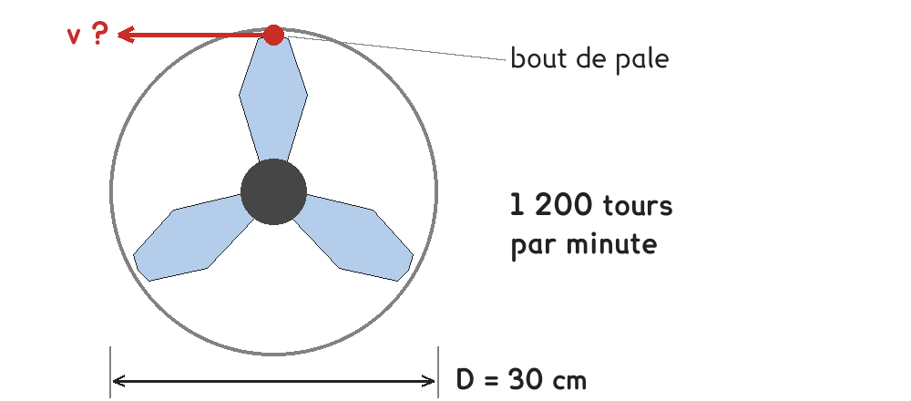
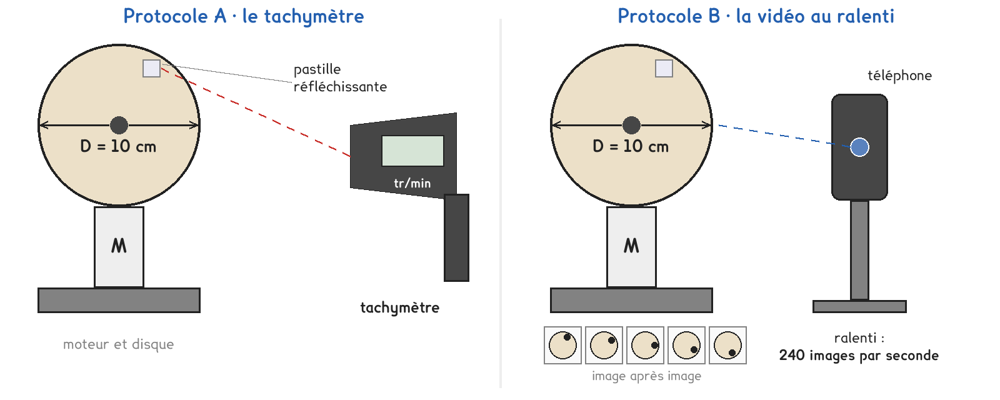

2de Bac Pro · toutes spécialités · TP commun 2DE-03
À quelle vitesse va le bout des pales du ventilateur ?
2 figures
Sujet. Un ventilateur de 30 cm de diamètre tourne à 1 200 tours par minute. Près de l’axe, les pales paraissent tourner sans hâte ; leur bout, lui, parcourt un grand cercle à chaque tour.

Problématique : à quelle vitesse va le bout des pales du ventilateur ?
Au laboratoire, un disque de carton de 10 cm de diamètre, entraîné par un moteur, remplace le ventilateur.
a) Le point rouge, au bout d’une pale, décrit une trajectoire, entourer :
rectiligne · circulaire · quelconque
La fréquence de rotation n est le nombre de tours par seconde, en tours par seconde (tr/s). La période T est la durée d’un tour : T = 1 ÷ n.
b) Convertir. Le premier est fait en exemple.
| 1 200 tr/min | 600 tr/min | 3 000 tr/min | 30 cm | 10 cm | 70 cm |
|---|---|---|---|---|---|
| 20 tr/s | ……… tr/s | ……… tr/s | ……… m | ……… m | ……… m |
En un tour, le bout de la pale parcourt le périmètre de son cercle : π × D.
c) Calculer la distance parcourue en un tour par le bout des pales du ventilateur.
Distance en un tour = π × ……………… = ……………… m
Pour trouver la vitesse, il faut d’abord la fréquence de rotation n. Deux protocoles la mesurent : une partie de la classe prend A, l’autre B, et on compare à la fin.

Protocole A · le tachymètre. Visé sur une pastille réfléchissante collée sur le disque, il affiche n en tours par minute. Le labo n’en a qu’un : il sert de référence aux autres.
Protocole B · la vidéo au ralenti. Le téléphone filme le disque à 240 images par seconde. On relit la vidéo image par image, on compte les images de cinq tours et on en calcule n.
d) Compléter le tableau pour comparer les deux protocoles.
Dans la dernière ligne, entourer.
| Protocole A | Protocole B | |
|---|---|---|
| Ce qu’on lit ou ce qu’on compte | …………………………… | …………………………… |
| Ce qu’on calcule pour avoir n en tr/s | …………………………… | …………………………… |
| Appareils disponibles | un seul · un par poste | un seul · un par poste |
Le choix se fait maintenant, avant de toucher au matériel.
e) Quel protocole prenez-vous ? Justifier en une phrase. Le professeur peut vous imposer celui qui reste disponible.
Je prends le protocole ……… parce que ……………………………………………………………………
f) Avant de mesurer, un ordre de grandeur. Le bout des pales du ventilateur va à environ, entourer :
2 km/h, un piéton lent · 20 km/h, un vélo · 70 km/h, une voiture sur route
Avant de commencer
Cheveux attachés, manches et cordons rangés : rien ne doit pouvoir s’enrouler autour de l’axe.
Le disque est bien fixé avant la mise en marche. On ne le touche jamais quand il tourne, même pour l’arrêter.
Le faisceau du tachymètre ne se dirige vers les yeux de personne.
g) Schématiser votre montage, vu de face : le disque, son diamètre, la marque et l’appareil qui mesure.
Le schéma se dessine sur la feuille du TP.
h) Relever et calculer. En A, n se lit en tr/min ; en B, elle se calcule à partir des images. Avec D en m et n en tr/s, v = π × D × n est en m/s.
| Tension du moteur (V) | ………… | ………… | ………… |
|---|---|---|---|
| En B : nombre d’images pour 5 tours | |||
| En B : durée de 5 tours (s) = images ÷ cadence | |||
| Fréquence de rotation n (tr/min) | |||
| Fréquence de rotation n (tr/s) | |||
| Vitesse du bord du disque, v (m/s) |
i) Quand la tension du moteur augmente, que deviennent n et v ? En B, pourquoi compter les images de cinq tours plutôt que d’un seul ?
j) Au même réglage, l’autre protocole donne-t-il la même fréquence ?
Écart en tr/min : ……………… ; commentaire : ……………………………………………………………
k) Vitesse du bout des pales : D = 30 cm, n = 1 200 tr/min. En m/s, puis en km/h.
v = π × ……………… × ……………… = ……………… m/s, soit ……………… × 3,6 = ……………… km/h
l) Répondre à la problématique en deux phrases. Votre ordre de grandeur de la question f était-il le bon ?
Ce que ce TP a établi, et qui vaut pour tout objet qui tourne :
À RETENIR
Un point d’un objet qui tourne décrit un cercle. La fréquence de rotation n est le nombre de tours par seconde ; la période T = 1 ÷ n est la durée d’un tour.
Sur un cercle de diamètre D, la vitesse vaut v = π × D × n, avec v en m/s, D en m et n en tr/s : plus le point est loin de l’axe, plus il va vite.
TP commun de physique-chimie, toutes spécialités. Le travail se fait sur la feuille du TP : cette page en est la version à l'écran, sans les lignes à remplir. Rien n'est enregistré.